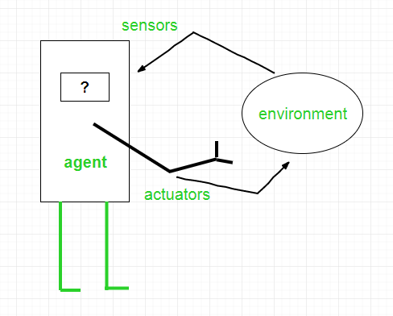
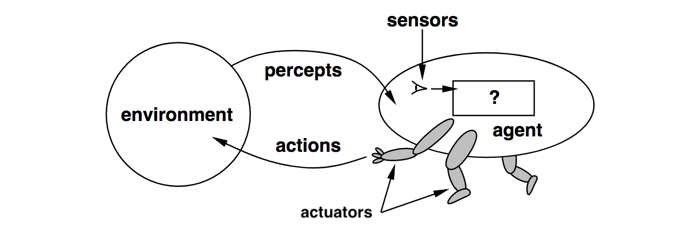
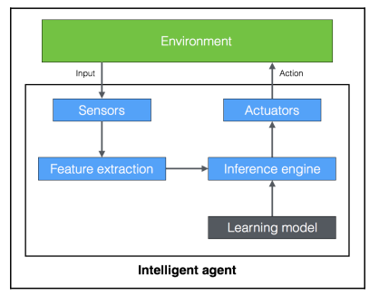
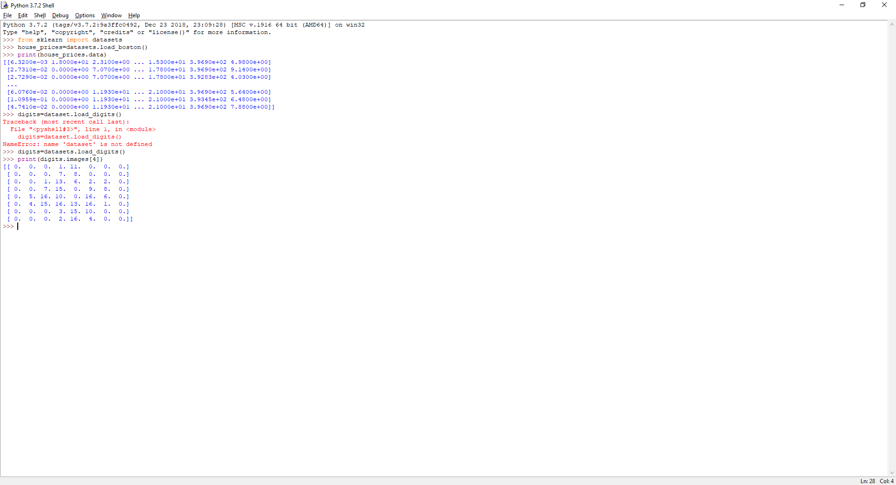

Trí thông minh nhân tạo là gì ?
Trí thông minh nhân tạo(AI) là một cách mà làm cho những cái máy có suy nghĩ và hành xử một cách thông minh. Những cái máy có thể điều khiển bởi phần mềm bên trong, vậy AI có nghĩa là làm việc một cách thông minh thông qua các trương trình máy tính. Nó là một môn khoa học để tìm kiếm lý thuyết và phương pháp có thể giúp cho các máy móc hiểu được thế giới và sau đó có thể xử lý phù hợp các tính huống theo cách mà con người có làm.
Nếu chúng ta nhìn gần hơn vào lĩnh vực AI thì có thể thấy nó đang phát triển khoảng vài thập kỷ , bạn sẽ thấy các nhà nghiên cứu đã tập trung tìm hiểu nhiều cách khác nhau những khái niệm khác nhau để định nghĩa AI . Trong thế giới hiện đại, AI được sử dụng trong nhiều ngành và trong nhiều hình thái. Chúng ta muốn một cái máy có thể cẩm nhận, biết , suy nghĩa và hành đọng. Chúng ta muốn cái máy của chúng ta hành động hợp lý.
AI có cách nghĩ và học gần với bộ não con người. Những nhà nghiên cứu tin AI có thể làm được bằng cách tìm hiểu làm sao bộ não của chúng ta làm việc thế nào. Bằng cách bắt chước cách mà bộ não con người học , nghĩ và chỉ đạo hành động, chúng tao có thể xây dựng một cái máy có thể làm giống như thế. CHúng có thể sử dụng như là một nền tảng để phát triển hệ thống thông minh có khá năng tự học hỏi.
Tại sao chúng ta cần học AI?
AI có khả năng tác động đến mọi khía cạnh trong cuộc sống của chúng ta. Lĩnh vực về AI đang có gắng hiểu các mô hình và hành động của các thực thể. Cùng với AI, chúng ta muốn xây dựng một hệt thống thông minh và khái niệm về trí thông minh. Hệ thống thông minh chúng ta xây dựng rất hữu dụng trong việc hiểu làm thế nào mà một hệt thống thông minh giống như bộ não của chúng ta làm việc về cấu trúc của các hộ thống thông minh khác.
Hãy xem thử cách bộ não chúng ta xử lý thông tin như thế nào:
Vỏ não(Brainstem) (Nhịp tim, nhiệt độ cơ thể) -> Não giữa- một phần trung tâm của não (midbrain) (phục vụ các chức năng quan trọng trong việc xử lý chuyển động của mắt xử lý thính giác và thị giác) -> một nhóm cấu trúc dưới vỏ não( Limbic) ( xử lý các việc có liên quan đến hành vi, thái độ, cảm xúc,động lực ) -> )neocortex( một phần của vỏ não liên quan đến những chức năng cao hơn của não bộ như nhận thức cảm giác , tạo ra các lệnh vận động lý luận suy nghĩ có ý thức và ngôn ngữ).
So sánh với vài lĩnh vực khác như toán học hay vật lý đã xuất hiện khoảng vài thế kỷ thì AI chỉ là một lính mới. Trải qua vài thập kỷ, AI đã có một vài sản phẩm như hệ thống xe tự lái . và trí thông minh của robot làm nó có thể đi lại. Dựa trên những hướng mà chúng ta đang đi tới thì việc xây dựng trí thông minh sẽ có tác động lớn đến cuộc sống của chúng ta trong những năm tới.
Chúng ta không thể không tự hỏi làm sao mà bộ não của con người có thể quản lý quá nhiều việc nhưng rất dễ dàng như thế. CHúng ta có thể nhận biết vật thể, hiểu ngôn ngữ, học những thứ mới, và thực hiện nhiều nhiệm vụ phức tạp và tinh vi với bộ não của chúng ta. Làm thế nào mà bộ não của chúng ta có thể làm được những việc đó ? Khi bạn có gắng làm việc đó với một cái máy, bạn sẽ thấy nó tụt lại phía sau ( when you try to do with a machine, you will see that it falls way behind) !!!???. Ví dụ khi chúng ta đong cố gắng tìm kiếm những thứ như sự sống ngoài trái đất hay du hành thời gian, chúng ta thực sự không biết nó có tồn tại hay không. Tin tốt là chúng ta biết AI có tồn tại. Bộ não của chúng ta là một cái chén thánh!! Nó là một ví dụ không thể tốt hơn về một hệ thống thông minh, Tất cả việc mà chúng ta cần làm đó là bắt chước nó cách thức và phương thức để có thể tạo lên một hệ thống thông minh tương tự não , thậm chí còn có thể tốt hơn.
Hãy xem một dữ liệu cơ bản được chuyển đổi một cách thông minh sẽ như thế nào.
Dữ liệu(Data) –xử lý(processing) Thông tin(information) –nhận thức(cognition) Hiểu biết(Knowledge) – Phân tích (pattern extraction) Hiểu(Understand) – kết luận(inference) Giải pháp thông minh.
Một trong những lý do chính chúng ta muốn học AI là tự động hóa nhiều việc. Chúng ta đang sống trong một thế giới mà .
Mặc dù bộ não con người rất giỏi trong việc phân tích những thứ xung quanh chúng ta, nó không thể theo kịp các điều kiện trên. Do đó chúng ta cần thiết kế và phát triển những chiếc máy thông minh có thể làm các việc đó. Chúng ta cần một hệ thống AI có thể làm:
Công nghệ AI đang được sử dụng tích cực để làm cho các cỗ máy đã có trở nên thông minh hơn, vậy nên chúng ta có thể thực hiện tạo nên AI nhanh hơn và hiệu quả hơn.
Ứng dụng của AI
Bây giờ chúng ta đã biết cách nào để xử lý các thông tin đã có , hãy xem những nơi mà AI đã xuất hiện thực tế. AI biểu hiện dưới nhiều hình thức khác nhau trong nhiều lĩnh vực, vì vậy ta thấy nó quan trọng để biết nó hữu dụng trong nhiều lĩnh vực . AI đã được xử dụng trong nhiều ngnahf công nghiệp và nó liên tục mở rộng một cách nhanh chóng. Một vài ví dụ về sự phổ biến của AI bao gồm:
Các nhánh của AI
Điềuquan trọng phải hiểu là có những lĩnh vực khác nhau trong việc nghiên cứu trong AI vậy nên chúng ta cần phải chọn đúng framework để giải quyết một vấn đề thực tế nhất định.
Khi một hệ thống thực hiện quan sát, nó sẽ được huấn luyện để so sánh những thứ nó nhìn thấy cùng với những thứ nó đã được nhìn thấy trong nguyên mẫu. Ví dụ hệ thống nhận dạng khuôn mặt. Phần mềm sẽ có gắng để tìm các vật thể như mắt, mũi miệng lông mày … so sánh… và theo cách đó nó sẽ tìm thấy khuôn mặt đó đã có trong cơ sở dữ liệu chưa.
1.Định nghĩa về trí thông minh sử dụng phép thử Turing
Huyền thoại củangành công nghệ máy tính và toán học – Alan Turing, đề xuất một cái gọi là phép thử Turing để giới thiệu một định nghĩa về trí thông minh. Nó là một bài kiểm tra để hiểu nếu một máy tính có thể học để bắt chước hành vi của con người. Oong ấy đã định nghĩa hành xử thông minh nghĩa là có thể hành xử như con nguoiwf trong suốt một cuộc nói chuyện. Hiệu suất của phép thử cho ta biết là thành công nếu nó có thể lừa người phỏng vấn nghĩ những câu trả lời được xuất phát từ con người.
Để thấy nếu một máy tính có thể làm điều đó, ông ấy đã đưa ra một bài kiểu tra: ông ấy đề xuất một nguowif phỏng vấn một cái máy thông qua một đoạn văn. Và một hạn chế khác nữa là người phỏng vấn không biết được ai sẽ là người trả lời. một cái máy hay một người thật sự. Để làm được công việc này một người sẽ tương tác với hai vật thể không xác định thông qua một văn bản, hai vật thể không xác định này được gọi là những người được phỏng vấn. Một trong số họ là người còn lại sẽ là một cái máy
Chiếc máy trả lời sẽ được cho là thông qua nếu người phỏng vấn không thể nói được câu trả lời đến từ một cái máy hay từ một con người.
Như bạn đã tưởng tượng thì cuộc phỏng vấn này là một nhiệm vụ khá khó khăn cho một cái máy . Có rất nhiều thứ có thể xảy ra trong suốt cuộc trò chuyện. Ở mức tối thiểu, cái máy cần phải làm được 1 vài thứ sau đây:
Bạn có biết tại sao lại phải sử dụng văn bản trong phép thử này không ? Theo Turing thì giả lập vật lý của một người không cần thiết cho trí thông minh. Vì lý do đó nên bài thử Turing tránh giao tiếp vật lý giữa người và máy. Còn một bài thử khác được gọi là Phép thử Turing Tổng hợp bao gồm cả tầm nhìn và cử động. Để qua được bài kiểm tra này, chiếc máy cần phải nhìn thấy vật thể và di chuyển xung quanh sử dụng ROBOTICS
.
Làm một chiếc máy suy nghĩ như con người
Đã nhiều thập kỷ , chúng ta đã cố gắng làm một chiếc máy có thể suy nghĩ như con người. Để làm điều này chúng ta trước hết cần hiểu con người suy nghĩ như thế nào. Làm thế nào chung ta có thể hiểu một người bình thường nghĩ như thế nào? Có một cách để làm điều đó là chúng ta phải ghi lại cách mà chúng ta giải quyết một vấn đề thế nào. Nhưng điều này cũng rất là khó, bởi vì chúng ta có quá nhiều thứ để ghi lại. Còn một cách khác đó là tiến hành một thí nghiệm dựa trên một định dạng đã được xác định trước. Chúng ta phát triển một số câu hỏi nhất định về nhiều chủ đề , sau đó sẽ xem mọi người trả lời thế nào.
Khi chúng ta đã thu thập đủ dữ liệu, chúng ta có thể tạo ra một nguyên mẫu để phỏng theo cách xử lý của con người. Nguyên mẫu này có thể sử dụng để tạo ra phần mềm có thể nghĩ như con người. Tất nhiên là nói thì dễ hơn làm. Tất cả những cái chúng ta quan tâm là cái gì mà phần mềm sẽ trả lời( software output) khi chúng ta đưa cho nó (software) một vấn đề cụ thể(particular input ). Nếu trương trình có thể đưa ra cách mà giống với cách con người làm thì sau đó chúng ta có thể nói nó có cơ chế suy nghĩ giống con người.
Biểu đồ sau sẽ cho chúng ta thấy những mức độ khác nhau về cách suy nghĩa và bộ não của chúng ta ưu tiên xử lý cái gì trước :
Hình ảnh -> Hoạt động - > Vật lý -> Hành vi - > Phân tích
Trong ngành khoa học máy tính có một lĩnh vực nghiên cứu được gọi là Mô hình nhận thức
(Cognitive Modeling) liên quan đến mô phỏng quá trình tư duy của con người. Nó sẽ cố gắng hiểu con người giải quyết vấn đề như thế nào. Nó đưa ra các phương pháp giải quyết vấn đề và biến thành một mô hình phần mềm. Mo hình này có thể sử dụng để mô phỏng hành vi của con người. Mô hình nhận thức được sử dụng đa dạng trong các ứng dụng của AI như là deep learning, expert system Natural Language Processing , robotics ….
Xây dựng một Rational agents
Rất nhiều nghiên cứu về AI đều tập trung xây dựng một Rational Agents. Vậy chính xác thì cái gì là Rational Agents? Trước đó chúng ta cần định nghĩa về từ hợp lý(Rational) . Tính hợp lý (rational) có nghĩa là đề cập đến việc làm đúng trong một hoàn cảnh nhất định. Nó cần được thực hiện theo cách có ích nhất trong một hành động. Một tác nhân(agent) được gọi là hành động thích hợp nếu : nó đưa ra một bộ quy tắc, nó hành động theo và đạt được mục tiêu. Nó chỉ nhận thức và hành động theo thông tin có sẵn. Hệ thống này được sử dụng rất nhiều trong AI để thiết kế robot khi nó đi trên các địa hình không xác định.
Làm thế nào để định nghĩa là điều đúng ? Câu trả lời là dựa trên những mục tiêu của tác nhân (agents). Một tác nhân (agent) được cho là thông minh và hành động độc lập. Chúng ta muốn truyền đạt khả năng thích ứng tới những tình huống mới. Nó nên hiểu môi trường làm việc của nó va fsau đó hành động theo đó để đạt được những kết quả tốt nhất. Những kết quả tốt nhất được quyết định bởi mục tiêu tổng thể nó đạt đượng. Hãy xem từ cách nhập liệu để được chuyển đổi thành hành động :

Input-> Sensor(cảm biến)-> Prepocesssor( tiền xử lý) -> Agent function(hàm tác nhân)-> Actuator(thiết bị truyền động) -> Action(Hành động).
Làm sao để chúng ta có thể định nghĩa hiệu suất làm việc cho một rational agent ? Người ta có thể nói rang đó là một tỷ lệ thuyaanj của mức độ thành công trong sự việc. The agent( tác nhân – xử lý ) được thiết kế để đạt được một nhiệm vụ nhất định, vì vậy đo lường hiệu suất làm việc là tính tỷ lệ % thành công nhiệm vụ nó hoàn thành. Nhưng chúng ta phải nghĩ cái gì đã tạo ra tính hợp lý trong toàn bộ sự việc. Nếu chỉ là về kết quả , thì tác nhân có thể có hành động nào để đạt được kết quả???????????????????????????????????????????
The agent function is a mathematical function that maps a sequence of perceptions into action( hàm agent là một hàm toán học dùng để phác thảo các trình tự của nhận thức vào trong hành động).
Làm những suy luận đúng đắn chỉ ra một phần của hành động hợp lý, bởi the agent(tác nhân) phải hành động một cách hợp lý để đạt được kết quả. Cái này giúp nó rút ra kết luận có thể được sử dụng liên tiếp. Thế còn những tình huống mà không có điều chắc chắn đúng ? Đó là những tình huống mà tác nhân(the agent) không biết phải làm gì nhưng nó vẫn phải làm một điều gì đó. Trong tình huống này, chúng ta không thể bao gồm khái niệm hay suy luận để xác định hành vi hợp lý(rational behavior).
General Problem Solver( Giải quyết vấn đề chung )
The General Problem Solver(GPS) là một trương trình AI được đưa ra bởi Herbert Simon J.C. Show, và Allen Newell. Nó là chương trình máy tính hữu ích đầu tiên ra đời trong thế giới AI. Mục tiêu là làm cho nó làm việc giống như một cỗ máy giải quyết vấn đề chung. Tất nhiên là đã có nhiều chương trình phần mềm tồn tại trước đó, Nhưng những chương trình đó chỉ thực hiện những nhiệm vụ chỉ định. GPS đã là chương trình đầu tiên được chỉ định để giải quyết bất cứ một vấn đề chung nào. GPS đã được cho là đê giải quyết tất cả các vấn đề bằng cách sử dụng thuật toán chung cho mỗi vấn đề.
Như là bạn đã nhận thấy, đây thực sự là một việc khó khan. Để lập trình GPS, tác giả tạo ra một ngôn ngữ mới được gọi là Information Processing Language(IPL). Tiền đề cơ bản là để diễn đạt bất kỳ vấn đề nào với một tập hợp các công thức đã hình thành trước. Những công thức này sẽ là một phần của bức tranh đồ thị cùng với nhiều nguồn. Trong đồ thị này thì tài nguyên ( source) là điểm bắt đầu (starting node) và điểm kết thúc của đồ thị(sink) được coi như là kết luận.
Mặc dù GPS được coi như là một chương trình để giải quyết vấn đề chung nhưng sự thực thì nó chỉ có thể giải quyết những vấn đề được định nghĩa rõ rang, giống như là giải toán tích phân hay hình học. Nó cũng có thể dung để giải cái chò đố chữ hay chơi cờ. Lý do là những vấn đề này có chung một cấu trúc. Nhưng trong thế giới thực điều này trở thành khó khan bởi vì số lượng và các hướng có thể giải quyết. Nếu bắt chương trình cố gắng giải quyết vấn đề bằng cách đém các bước trong một đồ thì thì nó trở thành điều không thể.
Giải quyết vấn đề với GPS
Hãy xem cấu trúc một vấn đề đưa ra và được giải quyết bởi GPS:
Một nhà điều hành cần quan tâm đến mọi điều kiện và mọi vấn đề có thể liên quan. Nó bao gồm những hành động, những điều kiện, và những kết quả thay đổi từ những hành động. Trong trường hợp này, hành động là đưa tiền cho cửa hang tạp hóa. Tất nhiên, điều này phụ thuộc vào việc bạn có tiền ở nơi bắt đầu, đó là điều kiện đầu tiên(precondition). Bằng cách đưa tiền, bạn đã thay đổi điêìu kiện tiền bạc của bạn, điều này dẫn đén kết quả là bạn có them sữa.
GPS sẽ hoạt động miễn là bạn có thể kết nối các vấn đề lại với nhau. Các rang buộc là nó sử dụng quá trình tìm kiếm để thực hiện công việc của mình, cách này quá phwucs tạp về mặt tình toán và tốn thời gian cho bất kỳ ứng dụng thực tế nào có ý nghĩa.
Xây dựng một tác nhân thông minh( intelligent Agent)
Có rất nhiều cách để truyền đạt thông tin cho một agent( tác nhân xử lý). Cách mà được sử dụng thông dụng nhất là kết hợp với machine learning, lưu dữ liệu, các quy tắc (rules), và những thứ tương tự. Trong phần này chúng ta sẽ tập trung vào machine learning. Trong trường hợp này cách mà chúng ta truyền sự thông minh cho một tác nhân xử lý( an agent) là thông qua dữ liệu và luyện tập.
Hãy xem một intelligent agent tương tác với môi trường( environment)
Cùng với machine learning, chúng ta muốn viết một chương trình để cho cỗ máy của mình sử dụng được những dữ liệu đã được định danh sẵn để giải quyết các vấn đề được đưa ra. Bằng cách duyệt qua dự liệu đã được lưu trữ, máy có thể học được cách làm thế nào để trích xuất các phần và mối quan hệ giữa các thành phần.
Trong các ví dụ trước, bộ não chính ( the intelligent agent) dựa trên những các nguyên mẫu học tập để chạy phần suy luận. Khi bộ phận cảm biến nhận được lệnh (input from sensor) , nó sẽ gửi các khối đặc tính đã được khai thác tới bộ não chính. Sau khi các đặc tính (hoặc tính năng) được trích xuất , bộ phận suy luận đã được học trước đó(trained inference engine) sẽ đưa ra một dự đoán dựa trên những nguyên mẫu học tập (learning model). Nguyên mẫu học tập (learning model) này được xây dựng dựa trên machine learning. Bộ phận suy luận ( inference engine) sau đó sẽ lấy một kết quả và gửi nó tới bộ phận hành động để thực hiện những hành động trong thế giới thực.
Có rất nhiền ứng dụng của machine learning đang tồn tại. Nó được sử dụng trong phân tích hình ảnh, robot, nhận diện giọng nói, dự đoán thị trường, vv...v… . Để hiểu rõ về machine learning và xây dựng một cách hoàn chỉnh bạn sẽ phải học nhiều thứ cũng như nhiều kỹ thuật trong các lĩnh vực khác nhau vd: nhận diện thành phần, mạng thần kinh ảo , data mining, phân tích …. Vvv.
Các loại mô hình
Có hai loại mô hình chính trong thế giới AI: mô hình phân tích (Analytical models) và mô hình học tập (Learned models). Trước khi chúng ta có một cái máy tính có thể tự tính toán, con người thường sử dụng dựa trên các mô hình phân tích. Các mô hình này có nguồn gốc là sử dụng các công thức toán học , về cơ bản nó là cách làm có trình tự để đi đến một kết quả cuối cùng. Vấn đề với phương pháp này là nó dựa trên những đánh giá của con người. Do đó mô hình này rất đơn giản và sẽ không chính xác với chỉ một vài thông số.
Sau đó chúng ta đã bước vào thế giới máy tính. Nơi mà những chiếc máy tính đã rất hữu dụng trong việc xử lý phân tích dữ liệu. Vậy nên mọi người đã bắt đầu sử các dụng mô hình học tập (Learned models) , những mô hình này có được thông qua quá trình đào tạo. Trong suốt quá trình được học tập, cái mãy đã nhìn vào rất nhiều ví dụ được nhập liệu và xuất ra kết quả . Những mô hình học tập này thường rất phức tạp và có độ chính xác với hang ngàn thông số. Điều này dẫn đến một phương trình toán học phức tạp chi phối dữ liệu.
Machine Learning cho phép chúng ta có được những mô hình học tập (Learned models), để xử dụng cho bộ phận suy luận ( inference engine). Một trong những điều tốt nhất ở đây là chúng ta không càn phải biết được mô hình toán học. Bạn không cần biết những phương trình toán phức tạp, bởi vì cái máy đã rút ra công thức dựa trên dữ liệu đã có. Tất cả mọi thứ chúng ta cần làm là tạo ra danh xách nhập liệu và đầu ra tương ứng cho dữ liệu nhập . Mô hình học tập mà chúng ta có chỉ là mối quan hệ giữa những gì nhập liệu và đầu ra tương ứng .
Cài đặt Python 3
Chúng ta sử dụng python trong cuốn sách này. Hãy chắc là bạn đã cài đặt version mới nhất . Hãy check version bằng lệnh sau trong Terminal ( cmd in windows): python3 –version;
Cài đặt trên Ubuntu
Python 3 is already installed by default on Ubuntu 14.xx and above. If not, you can install it
using the following command:
$ sudo apt-get install python3
Run the check command like we did earlier:
$ python3 --version
You should see the version number printed on your Terminal.
Cài đặt trên Mac OS X
If you are on Mac OS X, it is recommended that you use Homebrew to install Python 3. It is
a great package installer for Mac OS X and it is really easy to use. If you don't have
Homebrew, you can install it using the following command:
$ ruby -e "$(curl -fsSL
https://raw.githubusercontent.com/Homebrew/install/master/install)"
Let's update the package manager:
$ brew update
Let's install Python 3:
$ brew install python3
Run the check command like we did earlier:
$ python3 --version
You should see the version number printed on your Terminal.
Cài đặt trên window
If you use Windows, it is recommended that you use a SciPy-stack compatible
distribution of Python 3. Anaconda is pretty popular and easy to use. You can find the
installation instructions at: https://www.continuum.io/downloads.
If you want to check out other SciPy-stack compatible distributions of Python 3, you can
find them at http://www.scipy.org/install.html. The good part about these distributions
is that they come with all the necessary packages preinstalled. If you use one of these
versions, you don't need to install the packages separately.
Once you install it, run the check command like we did earlier:
$ python3 --version
You should see the version number printed on your Terminal.
Cài đặt các package cho cuốn sách
Cuốn sách này sử dụng vài package khác nhau như NumPy, SciPy, scikit-learn, và matplotlib.
Bạn phải cài các package này trước khi đọc tiếp các trang sau:
NumPy: http://docs.scipy.org/doc/numpy-1.10.1/user/install.html
SciPy: http://www.scipy.org/install.html
scikit-learn: http://scikit-learn.org/stable/install.html
matplotlib: http://matplotlib.org/1.4.2/users/installing.html
If you are on Windows, you should have installed a SciPy-stack compatible version of Python3

Tổng kết chương
Trong chương này chúng ta đã được học AI là cái gì và tại sao chúng ta phải học nó. Chúng ta đã thảo luận vài ứng dụng khác khau và các hướng của AI. Chung ta hiểu phép thử Turring là cái gì và cách tiến hành phép thử turing. Chúng ta đã học làm thế nào để một cái máy có thể suy nghĩ như người. Chúng ta đã thảo luận về các khái niệm về rational agent và cách chúng được thiết kế. Chúng ta đã học về General Problem Solver(GPS) và cách giải quyết vấn đè sử dụng GPS. Chúng ta đã thảo luận về cách phát triển một intelligent agent sử dụng machine learning. Chúng ta đã hiểu khái quát các kiểu dạng mô hình (models of intelligent).
Chúng ta thảo luận về cách cài đặt Python 3 trên các hệ điều hành, và các package cần thiết để xây dựng một ứng dụng AI. Chúng ta đã thảo luận cách sử dụng package để load dữ liệu. Trong chương tiếp theo chúng ta sẽ học về supervised learning và cách xây dựng mô hình để phân loại và regression.